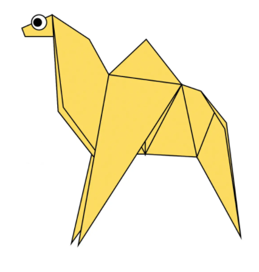

Origami Instructions and Diagrams
Step by step diagrams are probably the most popular and easiest to follow way to show how to fold things out of paper.
Trying to find good origami instructions on the Internet can be a lot of work through. To help your search we've put
together the largest database of free origami diagrams anywhere on the Internet.

Camel
- Camels have three sets of eyelids and two rows of eyelashes to keep sand out of their eyes.
- Camels can completely shut their nostrils during sandstorms.
- Camels are very strong and can carry up to 900 pounds for 25 miles a day.
Chameleon
- Species of chameleon can be as small as 15 mm or as large as 69 cm.
- Chameleons have a good eyesight and can spot a prey 5-10 meters away.
- Chameleons have a 360-degree field of vision.
Pigeon
- Pigeons are renowned for their outstanding navigational abilities.
- Pigeons are incredibly complex and intelligent animals.
- Pigeons have excellent hearing abilities.
Bear
- Bears have excellent senses of smell, sight and hearing.
- Bears love to eat honey.
- Bears are one of the most intelligent land animals.
Flying Cicada
- Cicadas are like tiny violins and make noise like toy frogs.
- Cicadas are super sneaky, they are underground builders.
- Some cicadas are really tiny